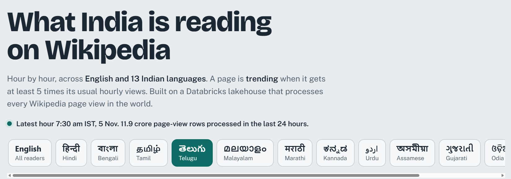

Live, updates every hour
Wikipedia Pulse
A Databricks lakehouse that tracks what India reads on Wikipedia in English and 13 Indian languages, processing about 12 crore rows a day and flagging pages that suddenly become popular.
What it provesI can run Databricks, PySpark and Delta Lake pipelines at real scale, incrementally and reliably, the way production data platforms work.

- Wikimediahourly dumps
- GitHub Actionslands files
- BronzeAuto Loader
- Silverparsed + checked
- Goldtrends + spikes
- Websitelive dashboard
- Delta Lake bronze, silver and gold tables with liquid clustering, orchestrated by a Databricks Workflow
- Idempotent at every step: landing skips existing files, silver uses Delta transaction versions, gold rebuilds only changed hours
- Spike detection flags pages at 5× their 24-hour average; a self-healing ingestion step refills any missed hours
Built with Databricks, PySpark, Delta Lake, Unity Catalog, GitHub Actions